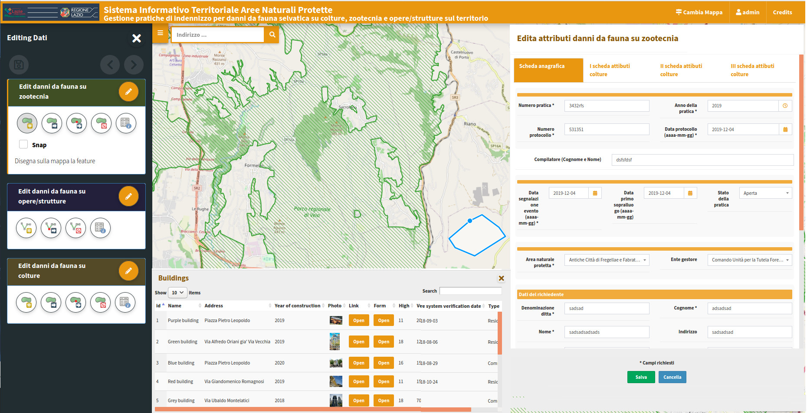

Tutti i moduli, le tecnologie e gli strumenti integrati in G3W-Suite, divisi tra il client cartografico web e la suite di amministrazione.
Interfaccia responsive altamente reattiva per smartphone, tablet e PC Desktop. Include funzioni di geolocalizzazione GPS integrate in tempo reale per il lavoro in campo ed una veste grafica personalizzabile con testi e loghi del proprio Ente.
Integrazione immediata con mappe di base commerciali e open source (OpenStreetMap, Google Maps, Bing Maps). Ricerche cartografiche avanzate con auto-zoom, gestione della trasparenza dei layer e consultazione strutturata della legenda.
Query Builder integrato per interrogazioni e ricerche personalizzate. Gestione nativa delle relazioni spaziali, join 1:N ed N:M. Generazione dinamica di grafici interattivi basati sul plugin QGIS DataPlotly, serie storiche temporali e allegati multimediali.
Modifica forme geometriche e attributi direttamente dal web, ereditando widget e moduli form preconfigurati in QGIS. Feature-lock per prevenire conflitti multi-utente ed editing offline per zone senza connettività.

Crea e organizza contenitori geografici tematici (gruppi) sul web. Pubblicazione immediata caricando il file di progetto .qgz. Totale corrispondenza grafica di legende, stili di tematizzazione, layer vettoriali e raster.
Integrazione diretta con database aziendali relazionali e spaziali: PostGreSQL/PostGIS, Oracle Spatial, MSSQL Server. Supporto a formati locali leggeri quali SQLite/SpatiaLite, GeoPackage, Shapefile e formati raster.
Gestione autonoma di utenti e gruppi con ruoli diversificati. Configurazione dei permessi di modifica dei singoli strati e abilitazione dei filtri geografici e vincoli alfanumerici (SQL / QGIS Expression) specifici per ciascun utente.
Abilita moduli dedicati alla Pubblica Amministrazione: collegamento censuario catasto, CDU (Certificato di Destinazione Urbanistica) con modelli di stampa dedicati, moduli per la gestione dei numeri civici e stradario in conformità con gli standard RNDT e INSPIRE.

G3W-Suite è concepito per garantire stabilità, prestazioni elevate e totale compatibilità con gli standard geografici internazionali.
Sfrutta al 100% le API e l'engine di QGIS Server per visualizzare in modo perfetto i tuoi stili grafici e le tue mappe.
Piena conformità con gli standard internazionali WMS, WFS, WCS e le specifiche CSW per i metadati geografici.
Integrazione profonda con i più diffusi database relazionali e geografici con supporto a query spaziali complesse.
Possibilità di estendere le funzioni del nucleo base scrivendo moduli ad-hoc ed integrandosi con API di terze parti.